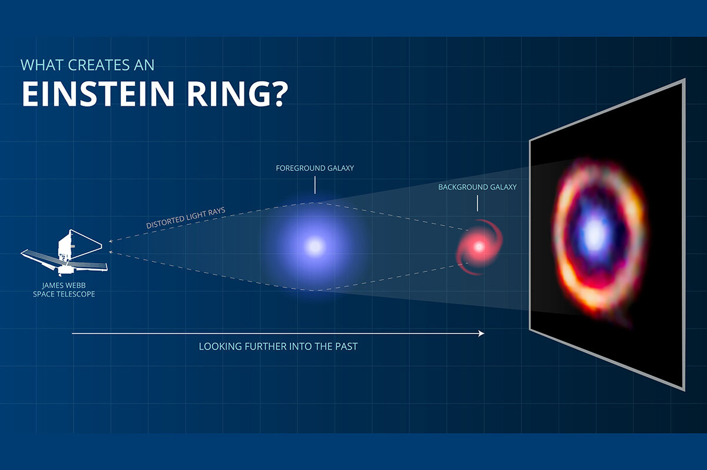

제임스 웹,
우주에서 가장 먼 복잡한 유기 분자 감지
연구원들은 지구에서 120억 광년 이상 떨어진 은하에서 복잡한 유기 분자를 발견했다. 이 은하계는 현재 이러한 분자가 존재하는 것으로 알려진 가장 먼 은하다.
미국 일리노이 대학교(University of Illinois Urbana-Champaign) 천문 물리학 교수 호아킨 비에이라(Joaquin Vieira)와 대학원생 케다르 파드케(Kedar Phadke)는 국제 과학자 팀과 협력하여 은하계의 더 큰 먼지 알갱이에서 생성된 적외선 신호와 새롭게 관찰된 탄화수소 분자를 발견했다.
제임스 웹 우주 망원경(James Webb Space Telescope , JWST)을 용한 이 연구 결과는 Nature 저널에 게재됐다.
Vieira는 “먼지 알갱이는 우주에서 생성된 항성 복사의 약 절반을 흡수하고 재방출하여 멀리 있는 물체의 적외선을 매우 희미하게 만들거나 지상 망원경으로는 감지할 수 없게 만든다”고 말했다.
새로운 연구에서 JWST는 중력 렌즈 효과(gravitational lensing)라는 현상을 활용했다. Vieira는 “이 확대는 두 은하가 지구의 관점에서 거의 완벽하게 정렬될 때 발생하며 배경 은하의 빛이 전경 은하에 의해 아인슈타인 고리(einstein ring)로 알려진 고리 모양으로 왜곡되고 확대된다”고 말했다.

웹이 관측한 은하는 중력 렌즈 효과로 알려진 현상으로 인해 발생한 아인슈타인 고리를 보여준다. credit: S. Doyle / J. Spilker.
연구팀은 SPT0418-47에 JWST를 정렬시켰다. SPT0418-47은 미국 국립 과학 재단(NSP)의 남극 망원경을 사용하여 발견, 이전에 중력 렌즈 효과에 의해 약 30~35배 확대된 먼지로 가려진 은하로 식별됐다. SPT0418-47은 지구에서 120억 광년 떨어져 있으며, 이는 우주의 나이가 15억 년 미만이거나 현재 나이의 약 10%에 해당하는 시간에 해당한다.
Vieira는 “중력 렌즈 효과와 JWST의 결합된 힘에 접근하기 전에는 모든 먼지를 통해 실제 배경 은하를 볼 수도 공간적으로 확인할 수도 없었다”고 말했다.
JWST의 분광 데이터에 따르면 SPT0418-47의 가려진 성간 가스는 무거운 원소가 풍부하여 여러 세대의 별이 이미 살고 죽었다는 것을 나타낸다. 연구원들이 발견한 특정 화합물은 다환 방향족 탄화수소(PAH)라고 불리는 분자 유형이다. 지구상에서 이러한 분자는 연소 엔진이나 산불에 의해 생성된 배기 가스에서 찾을 수 있다. 탄소 사슬로 구성되어 있는 이 유기 분자는 초기 생명체의 기본 구성 요소로 간주된다고 연구원들은 설명했다.
Phadke는 “이 연구가 지금 우리에게 말하고 있고 우리가 여전히 배우고 있는 것은 JWST 이전에는 볼 수 없었던 더 작은 먼지 알갱이가 있는 모든 지역을 볼 수 있다는 것”이라며 “새로운 분광 데이터를 통해 은하의 원자 및 분자 구성을 관찰할 수 있어 은하의 형성, 수명 주기 및 진화 방식에 대한 매우 중요한 통찰력을 제공한다”고 말했다.